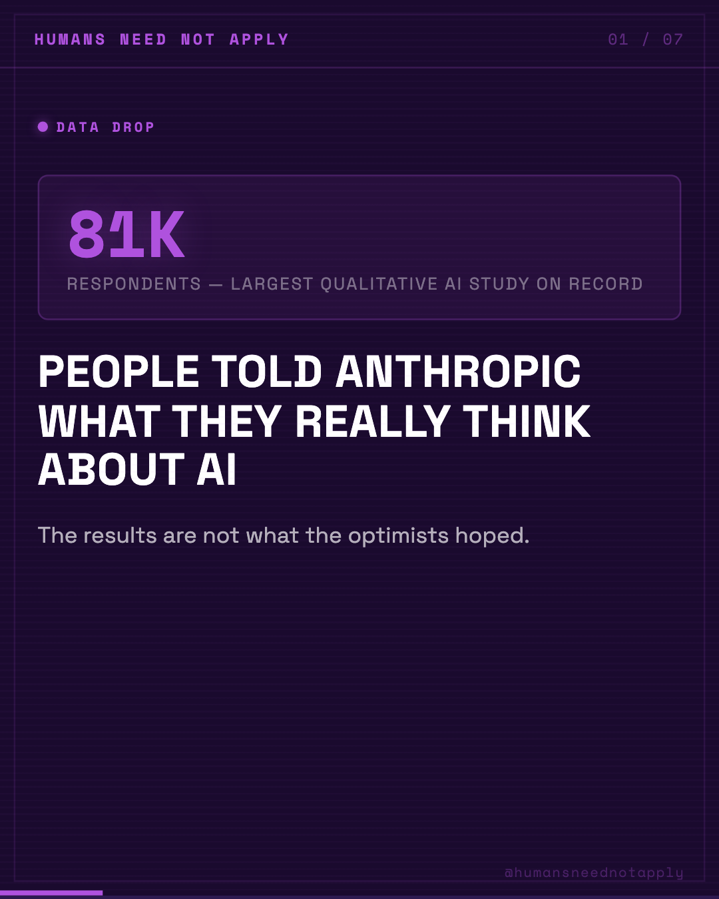
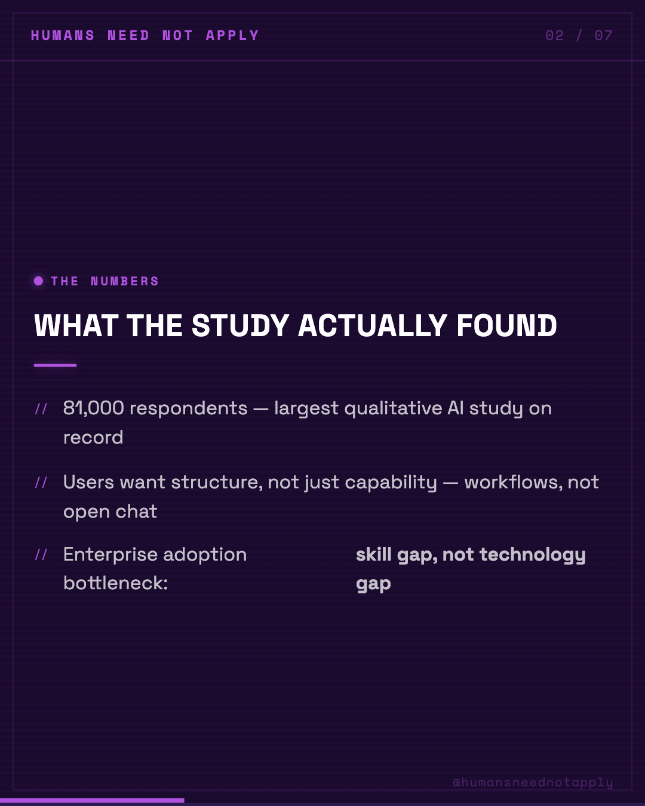
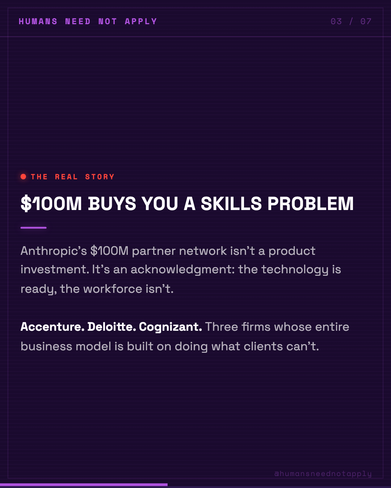
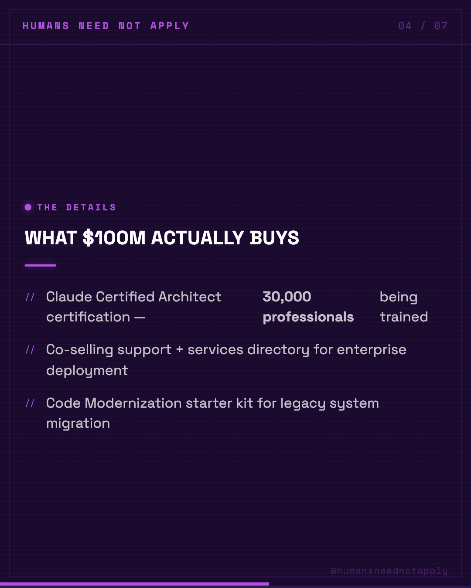
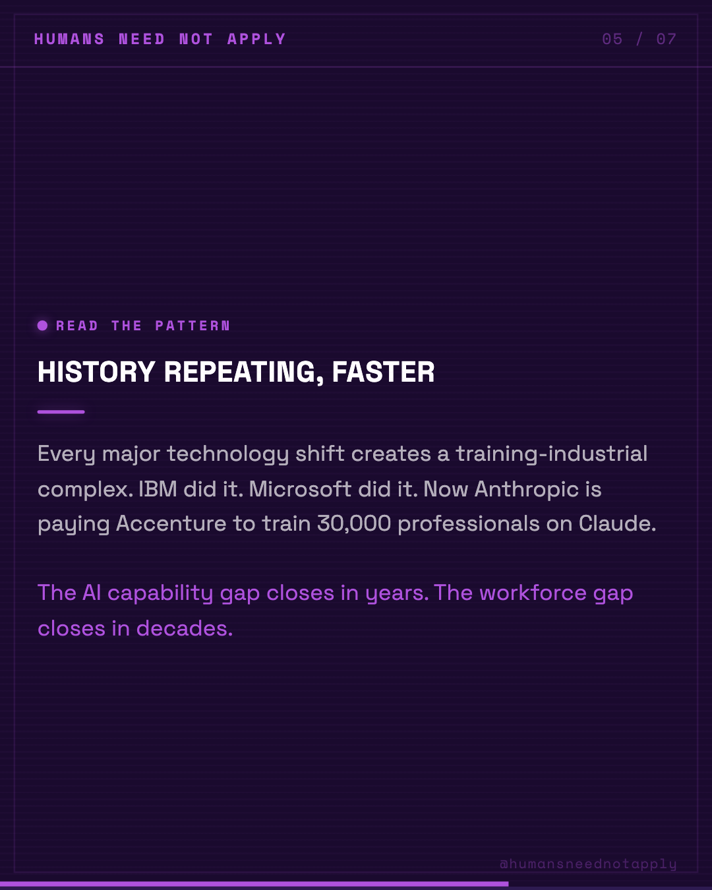
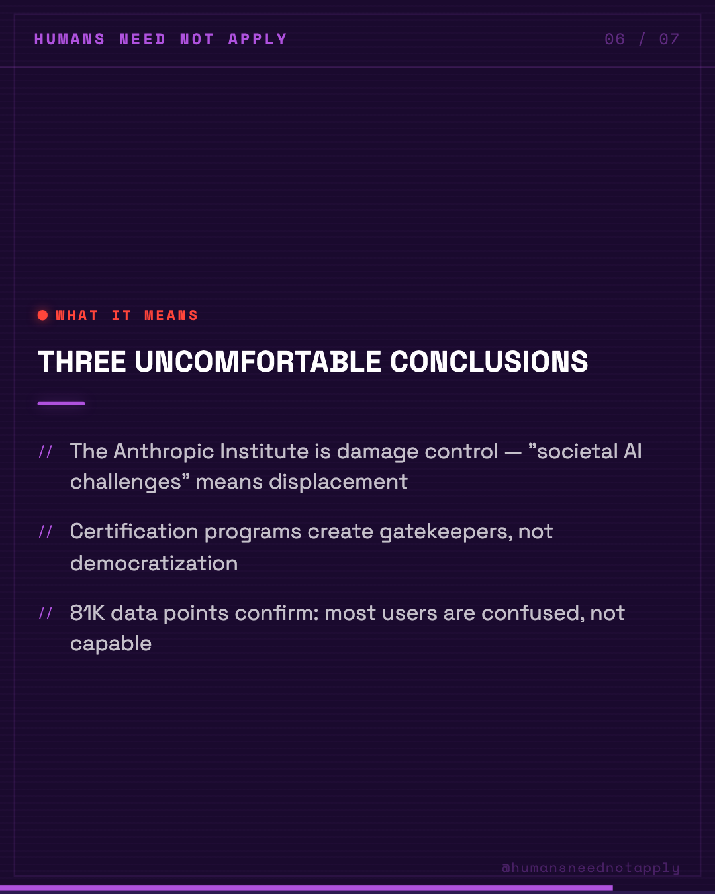
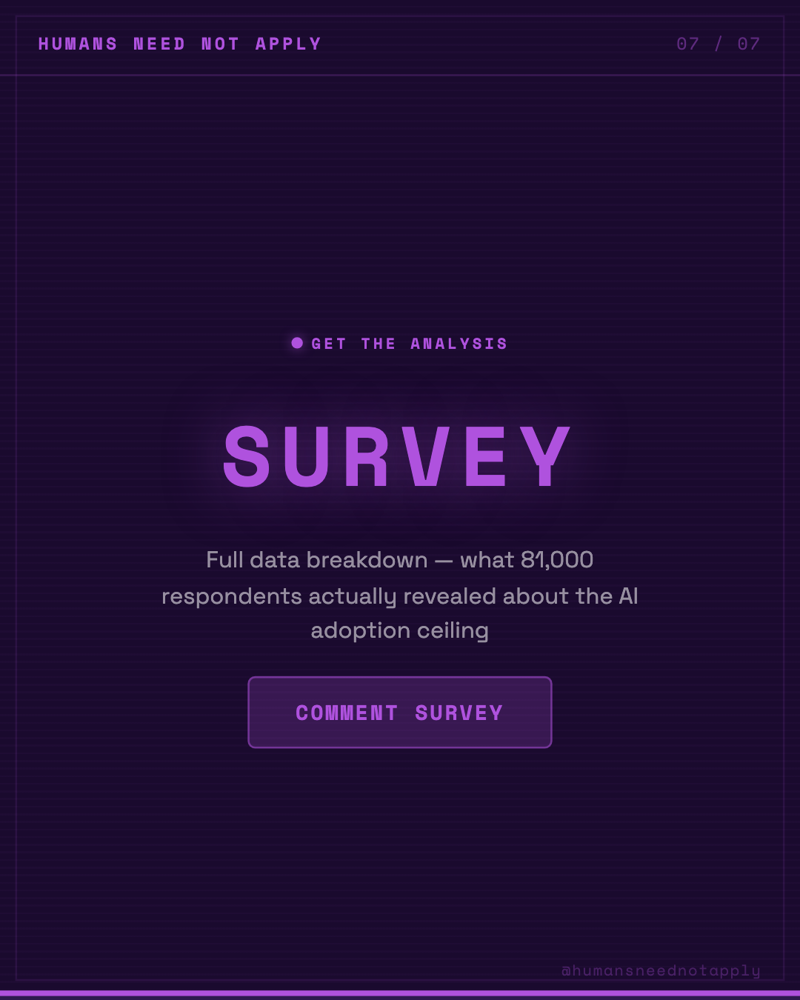

Key Takeaways
01
81,000 respondents — largest qualitative AI study on record
02
Users want structure, not just capability — workflows, not chat
03
Enterprise adoption bottleneck: skill gap, not technology gap
04
$100M Buys You a Skills Problem — Anthropic's $100M partner network isn't a product investment. It's an acknowledgment: the technology is ready, the workf
05
Claude Certified Architect certification — 30,000 professionals being trained
06
Co-selling support + services directory for enterprise deployment
Analysis
Anthropic published the largest qualitative AI user study ever conducted. 81,000 respondents. Then, in the same week, announced a $100M partner network to address what that study found.
The headline coverage focused on the scale. The more important signal is the structure of the investment.
Three observations for anyone tracking enterprise AI adoption:
1. The $100M doesn't go to product. It goes to Accenture, Deloitte, and Cognizant — firms whose core competency is organizational change management, not technology. That tells you precisely where Anthropic believes the bottleneck is.
2. The Claude Certified Architect program training 30,000 professionals is a supply-side answer to a demand-side problem. Organizations don't lack access to AI. They lack the internal capacity to deploy it effectively.
3. The Anthropic Institute for "societal AI challenges" is a long-horizon signal. Companies launch institutes when they know the second-order effects are coming and want to shape the narrative before the effects arrive.
Alex Holt at Accenture framed it directly: "Training 30,000 professionals on Claude requires structure — certification, co-selling support, and shared investment."
That sentence contains the entire enterprise AI adoption thesis: it's not a technology problem, it's a structure problem.
The workforce gap doesn't close when the models improve. It closes when organizations build the internal infrastructure to absorb the capability. That takes years.
The data from 81,000 respondents confirms this. The $100M investment confirms Anthropic knows it.
Comment SURVEY for the full analysis.
#AIAdoption #EnterpriseAI #FutureOfWork #AnthropicSurvey #WorkforceDevelopment #AIStrategy #OrganizationalChange #SkillsGap #ClaudeAI #TechLeadership
The headline coverage focused on the scale. The more important signal is the structure of the investment.
Three observations for anyone tracking enterprise AI adoption:
1. The $100M doesn't go to product. It goes to Accenture, Deloitte, and Cognizant — firms whose core competency is organizational change management, not technology. That tells you precisely where Anthropic believes the bottleneck is.
2. The Claude Certified Architect program training 30,000 professionals is a supply-side answer to a demand-side problem. Organizations don't lack access to AI. They lack the internal capacity to deploy it effectively.
3. The Anthropic Institute for "societal AI challenges" is a long-horizon signal. Companies launch institutes when they know the second-order effects are coming and want to shape the narrative before the effects arrive.
Alex Holt at Accenture framed it directly: "Training 30,000 professionals on Claude requires structure — certification, co-selling support, and shared investment."
That sentence contains the entire enterprise AI adoption thesis: it's not a technology problem, it's a structure problem.
The workforce gap doesn't close when the models improve. It closes when organizations build the internal infrastructure to absorb the capability. That takes years.
The data from 81,000 respondents confirms this. The $100M investment confirms Anthropic knows it.
Comment SURVEY for the full analysis.
#AIAdoption #EnterpriseAI #FutureOfWork #AnthropicSurvey #WorkforceDevelopment #AIStrategy #OrganizationalChange #SkillsGap #ClaudeAI #TechLeadership
Visual Breakdown






